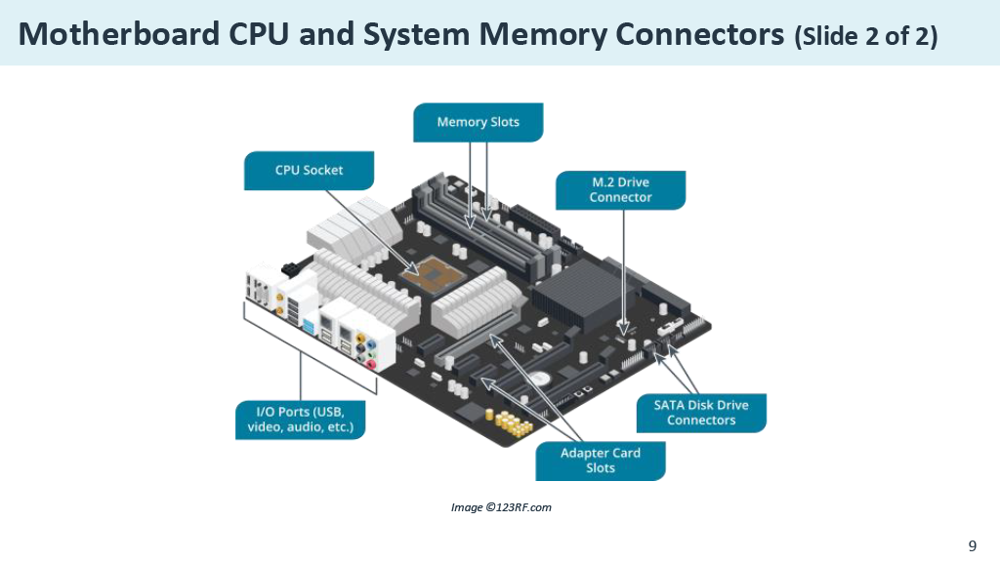
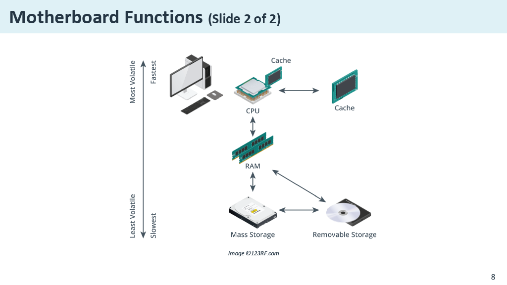
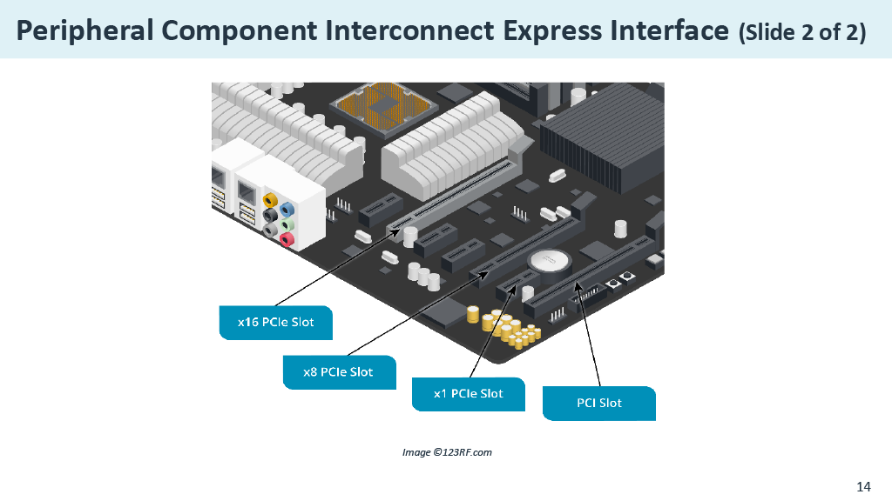
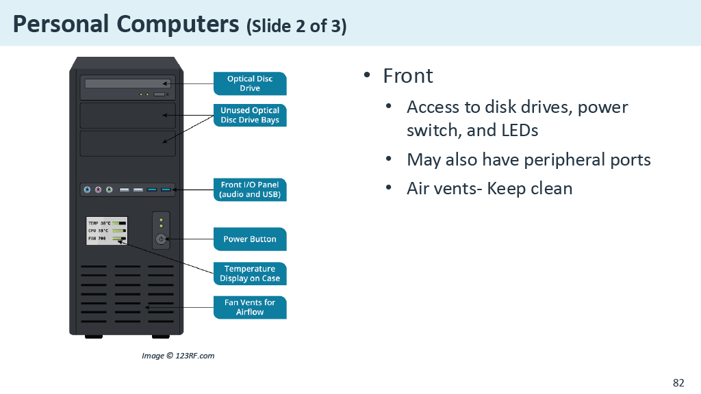
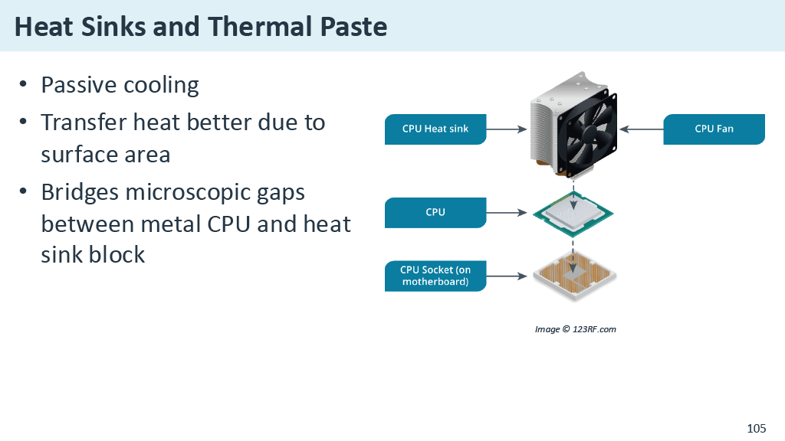

What’s inside a
personal computer?
A visual, beginner-friendly tour of the parts that make a computer work — and how they connect together.
Start with the big picture
The case holds the power supply, motherboard, processor, memory, storage, cooling, and optional expansion cards.
Follow the data path
Data moves from storage into memory, through the CPU, and out to displays, networks, and other peripherals.
Work safely
Power off, unplug, ground yourself, and protect sensitive components from electrostatic discharge.
Electrical safety & ESD
Protect yourself and the computer before touching any internal part.
Shut down the computer, unplug it from the wall, and press the power button once to discharge remaining power.
Use an ESD wrist strap and grounding mat whenever possible. Avoid working on carpet or wearing clothing that creates static.
Work on a clean, dry, non-conductive surface. Hold circuit boards by their edges and store parts in ESD-safe bags.

Motherboard
The main circuit board connects the computer’s components and gives them paths for power and data.

CPU
The central processing unit fetches, decodes, and executes instructions.
What matters
- Clock speed and the number of cores affect how quickly tasks can run.
- The CPU socket must match the motherboard.
- AMD commonly uses PGA-style processors; Intel commonly uses LGA-style sockets.

System memory (RAM)
RAM temporarily holds the instructions and data the CPU is actively using.
RAM is the computer’s short-term workspace: quick to access, but limited and temporary.
| Type | Typical data rate | Transfer rate | Maximum module size |
|---|---|---|---|
| DDR1 | 200–400 MT/s | 1.6–3.2 GB/s | 1 GB |
| DDR2 | 400–1066 MT/s | 3.2–8.5 GB/s | 4 GB |
| DDR3 | 800–2133 MT/s | 6.4–17.0 GB/s | 16 GB |
| DDR4 | 1600–3200 MT/s | 12.8–25.6 GB/s | 32 GB |
| DDR5 | 4800–8000+ MT/s | 38.4–51.2+ GB/s | 128 GB+ |
Storage devices
Storage keeps the operating system, applications, and files even when the computer is turned off.
Solid-state drives
Fast, quiet storage with no moving parts. Connects through SATA or PCIe M.2 (NVMe).
Hard disk drives
Uses spinning magnetic platters, a spindle, actuator, and read/write heads.
Drive arrays
Combines multiple drives for improved performance, capacity, or redundancy.

Expansion cards
Cards add specialized features such as graphics, sound, and wired networking.

Cables & connectors
Each connector has a specific shape and purpose. Never force a plug into a socket.
SATA
Connects internal drives to the motherboard for data and to the power supply for energy. SATA III supports up to 6 Gb/s.
Molex
An older four-pin power connector supplying 5 V and 12 V to legacy devices and accessories.
Display cables
HDMI and DisplayPort are common digital video connections. DVI and VGA are older display standards.
Peripheral devices
Peripherals let people interact with the computer and extend what it can do.

Power supplies & cooling
The power supply converts wall power, while cooling moves heat away from the CPU and other high-performance parts.
